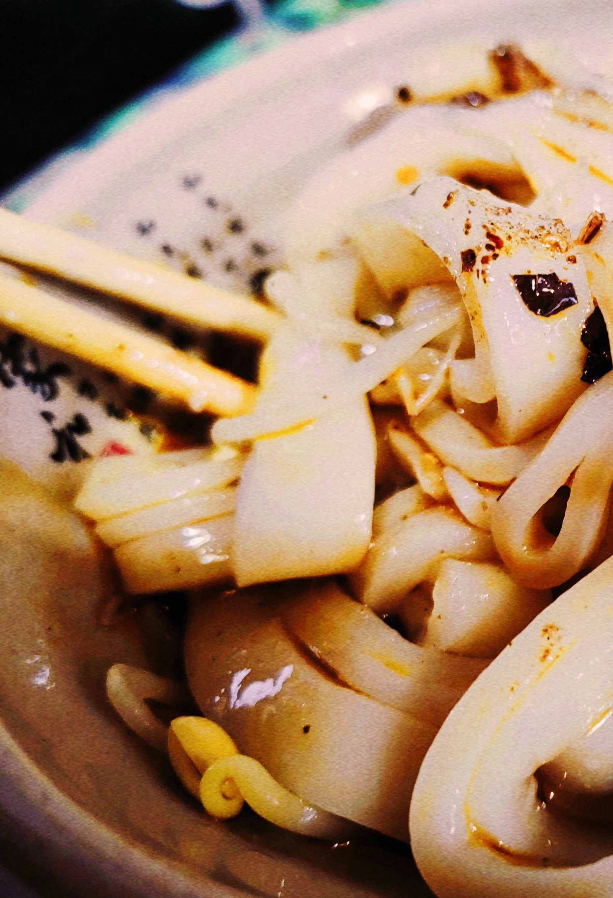

历史文化
特色节目&文化遗产
相关介绍

名优特产
特色节目&文化遗产
相关介绍
风景名胜
特色节目&文化遗产
相关介绍
地理位置
特色节目&文化遗产
相关介绍
安仁古镇总是让人想一去再去，不是因为满街的旗袍美女，也并非收藏着时光故事的老公馆，而是因为这里随处都有隐匿的惊喜，等待你走街串巷一一探索。在安仁的这些日子，小编逛遍了老街上的文艺小店，接下来就好好为各位看客说道说道。
美丽富饶的土地，生生不息的文化，孕肓了泸州人不屈不挠、奋发拼搏的精神品格。宋、元之际，蒙古军 入蜀，泸州筑城于合江神臂崖坚持抗战35年之久，“天生的重庆，铁打的泸州”由此而得名。中国工农红军四 渡赤水遗址、泸州起义指挥部、朱德纪念馆以及朱总司令亲笔题写的“救民水火”、“护国岩”等革命遗址已 成为爱国主义教育基地。 气候温和，五业兴旺。泸州北部为准南亚热带季风湿润气候，南部山区气候有中亚热带、北亚热带、南温 带和北温带气候之分，具有山区立体气候的特点。这里土地肥沃，物产富庶。具有春荣夏艳秋实冬秀的江南特 色。得天独厚的自然条件为农、林、牧、副、渔业提供良好的条件，是四川省的粮、猪、林、烟、果、中药材 等产品的重要生产基地。